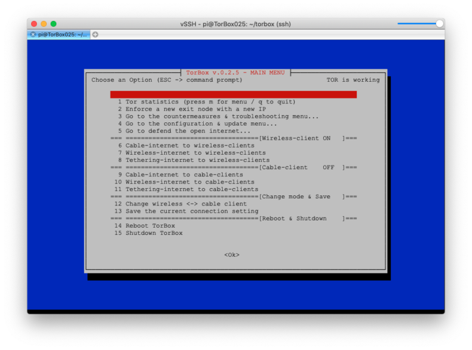

Almost a month ago, the Tor Project called for support:
We currently have approximately 1,000 bridges, 600 of which support the obfs4 obfuscation protocol. Unfortunately, these numbers have been stagnant for a while. It’s not enough to have many bridges: eventually, all of them could find themselves in block lists. We therefore need a constant trickle of new bridges that aren’t blocked anywhere yet. This is where we need your help. By setting up an obfs4 bridge, you can help censored users connect to the open internet through Tor.
Based on this call we put a bridge relay into the net a week ago, and – if everything works out – we will add a second one. However, that was not enough for us. Mostly during the last few weekends, we’ve implemented a TorBox feature that allows anyone with a public IP address, 24/7 internet connectivity over a long time, and a bandwidth of at least 1 Mbps to configure their bridge relay at the touch of a button and put it on the net. Besides, we have added and improved some other details, so that we can now release the resulting image as TorBox v.0.2.5. Below are the corresponding links (typically, you need only the image file):


Changelog v.0.2.4-rpi4 (08.08.2019) —> v.0.2.5 (24.09.2019)
New: This version introduces the support for setting up a bridge relay.
Updated : The system is based on Raspbian “Buster” lite with Linux Kernel 4.19.66 and Tor version 0.4.1.5.
New: A little message (“TOR is working“) in the right corner of the main menu shows you immediately if you are connected with the Tor network (meaning https://check.torproject.org returns a positive result). Since a missing response does not automatically mean that there is no connection to the Tor network, no error message is displayed. In other words, if this message is missing, there may or may not be a connection problem.
New: We use the same method as mentioned above for the final message box after selecting (or changing) a connection (main menu entry 6-11). In case of success, the message starts with “CONGRATULATION !!” otherwise with “HMMM… THAT DOESN’T LOOK GOOD…“. In contrast to the positive message, negative feedback does not necessarily mean that an error has occurred. Since the check does not last more than 5 seconds, Tor may not have been ready yet; the check site may have been down, etc.
New: Support for Adafruit’s PiTFT displays (PiTFT 3.5″ resistive touch 320×480, PiTFT 2.8“ capacitive touch 240×320, PiTFT 2.4″, 2.8″ or 3.2″ resistive 240×320, PiTFT 2.2″ no touch 240×320, Braincraft 1.54″ display 240×240). Note: TorBox’s menus and dialog boxes have only been adapted for the PiTFT 3.5 (320×480) or any other display, which displays in textual mode at least 25×80 characters.
Improved: Menus and dialog boxes should now work more smoothly on 25×80 textual screens as well as on smartphone and tablet clients. For that reason, we added for some message boxes scroll texts, which are visible with the “scroll down” remark in the title of the message box.
Improved: Revised version of the Tor reset functionality in the „Countermeasure & Troubleshooting“ menu.
Improved: Cleaning up in the shell scripts (used more variables, combine certain parts into functions, etc.).
Updated: Pre-configured Bridges (we also added our bridge relay)
Fixed: While adding bridges, TorBox activates/deactivates the new bridges depending on the current bridge modus.
Fixed: Some more non-critical bugs and typos in the text files.
The pre-v.0.2.6 release is expected at the end of the year.